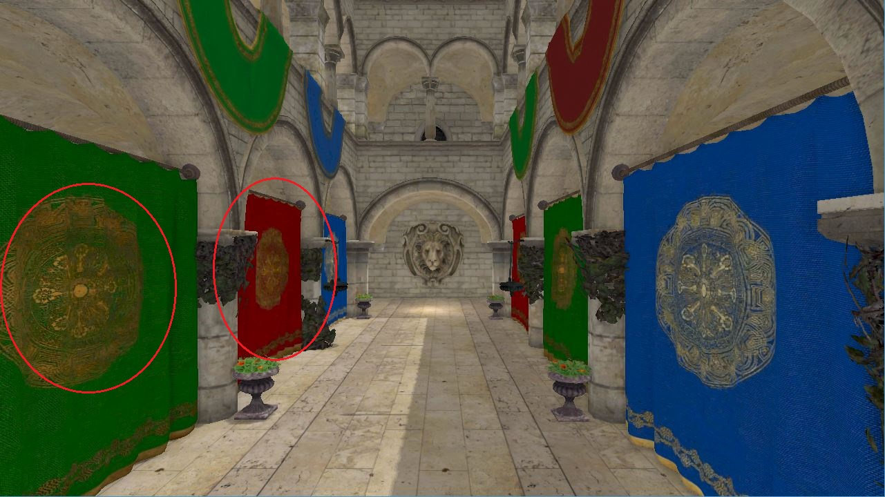
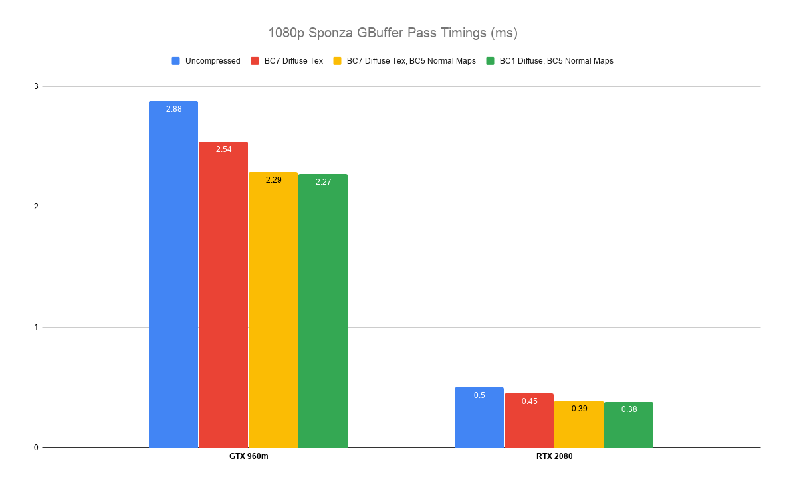
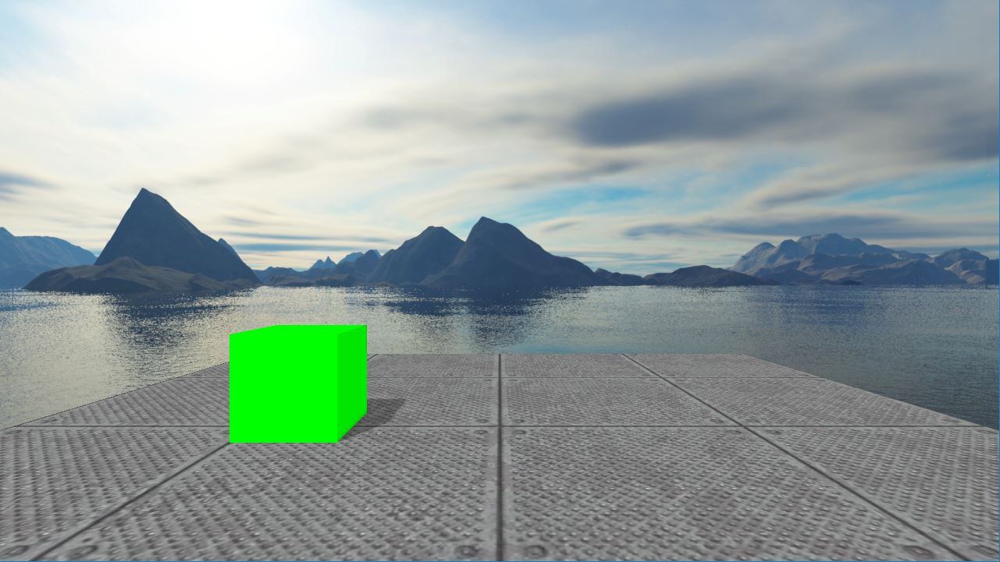
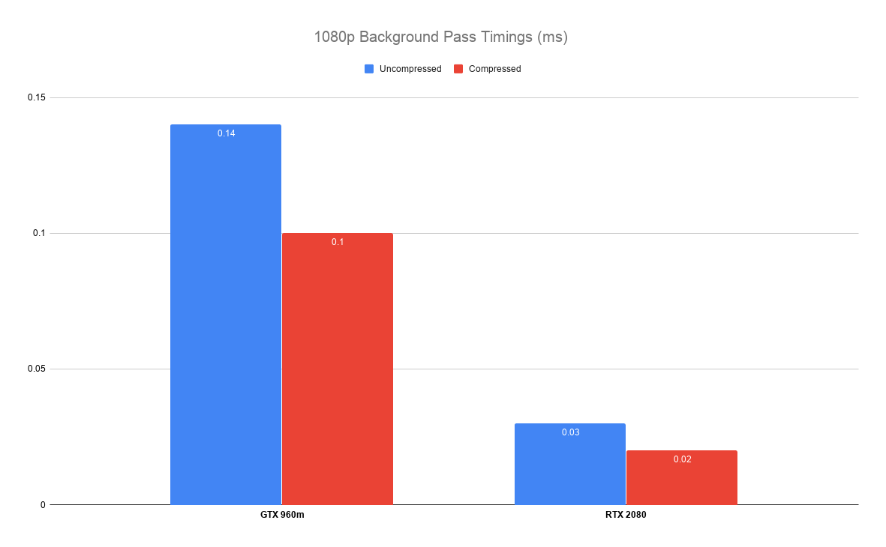

Progression
Description
Progression is a 3D game engine written in C++ for Linux and Windows. It originally started out as an simple OpenGL renderer for class projects, but it now features a Vulkan renderer, Lua scripting, skeletal animation, asset serialization, and more. It is my largest project to date, even though I keep rewriting it as I learn more and gain more experience with C++ and graphics. This page is meant to list out many of the many of the features Progression has, and explain why the feature was added. For some of the rendering features it also includes a more detailed explanation on how the feature was implemented and the results of it.
Code
Code from this project can be found on Github here
Contents
Rendering
Deferred Rendering
Description
Deferred rendering is a method of delaying, or deferring, the lighting pass of the data to be rendered. When an object is "drawn", it doesn't appear on screen yet, but rather the necessary information to light a pixel (position, normal, color, etc) is saved into a collection of textures commonly called the "geometry buffer", or "GBuffer" for short. After all of the objects have been "drawn", lighting calculations are then performed once for each pixel using the GBuffer. An example GBuffer and final output of the Sponza scene is shown in the image below.
GBuffer textures on the left, final lit output on the right.
Deferred rendering can be very advantageous when a scene has many lights, since there won't be any lighting on overdrawn pixels. It also makes it easier to do further techniques such as light volumes and tiled-deferred rendering. I tried both of these techniques with my old OpenGL renderer, but the current Vulkan renderer is just regular deferred rendering without even light volumes currently. Tiled deferred or F+ is on the docket.
GBuffer Size Considerations
One downside to deferred rendering is how much memory it uses. The higher the resolution and the more data you want to save, the larger the GBuffer textures need to be. This can greatly impact rendering speed as well, since memory access and bandwidth are very often a bottleneck on the GPU. As such, it becomes important to try to compress the GBuffer data as much as possible. Currently the GBuffer textures are layed out as follows:
Each row is one texture of the GBuffer, the number of bits being shown on the top.
There are a few interesting points here:
- The normals are encoded into 24 bits using Octahedron encoding, as described in this paper)
- The RTX 2080 and most GPUs do not support RGB textures with an optimal/tiled layout, so that is why the position and normal texture both require the alpha channel, which is currently being unused. I hope to at some point use alpha channel, for something like SSAO for example.
- The diffuse and specular RGB colors are both stored in the same texture. It is actually layed out with the upper 8 bits of RGB as the diffuse color, and the lower 8 as the specular. The alpha component is the 16 bit specular exponent / shininess.
- Depth is currently 32 bits, since there is currently nothing using the stencil buffer to do 24 / 8.
While 200 bpp is still quite a bit more than Destiny's 96 bpp, it is still better than my initial 392 bpp which gave no consideration to this. Besides making the positions be RGBA16F instead of RGBA32F, I benchmarked each change to the GBuffer which can be seen below:

Sponza timings with 5 lights in 1080p on my RTX 2080. Yes, the SSAO pass isn't the greatest currently.
Given the speed up from non-trivial normal encoding, we thought that there would be a similar speed up from packing the diffuse and specular color into one 16-bit RGBA texture. On average however, it is the same as with using two textures. Since it saves 32 bits per pixel however, we kept it. We are currently trying to figure out if 16 bit positions are okay, and play around with what could be put in the alpha channel instead of it being unused. I also want to try getting rid of the position buffer altogether and just recover it via the depth buffer.
Screen Space Ambient Occlusion (SSAO)
SSAO is a technique which simulates the amount of ambient light entering a particular point on a surface. Its goal is to calculate how much ambient light will reach a surface, which can vary a lot for surfaces such as flat floors compared crevices and folds. Progression uses the approach described in this tutorial. This method randomly samples many nearby points for each pixel, and return which fraction of those samples were occluded by other nearby geometry. This can be seen in the following image:

The random samples generated and tested for two points. White points are unoccluded, gray are occluded, and black are the initial points. Image from the tutorial above.
To sample random points within this hemisphere surrounding each pixel, random offsets are used. Since it would be impractical to generate or store random offsets for each possible orientation of the hemisphere, a "kernel" is created instead, which is a buffer of random offsets in tangent space. These offsets are scaled so that most of them are closer to the center:
const float numSamples = 32;
std::vector< glm::vec4 > kernel( numSamples );
for ( int i = 0; i < (int) numSamples; ++i )
{
glm::vec3 sample( randomFloat() * 2 - 1, randomFloat() * 2 - 1, randomFloat() );
sample = randomFloat() * glm::normalize( sample );
float scale = lerp( 0.1, 1.0, ( i / numSamples ) * ( i / numSamples );
kernel[i] = glm::vec4( scale * sample, 0 );
}
It is also undesirable for every single point to have the example same random samples, since this might cause some structure or artifacts in the final image, and require the use of more samples to get rid of these issues. To accomplish this, the hemisphere is randomly rotated before sampling. No rotation matrix is actually used, but instead random tangent vectors are calculated. Again it would be a lot more memory to store a tangent for every pixel, so we only create a 4x4 texture of tangents, and repeat them across the image:
std::vector< glm::vec4 > noise( 16 );
for ( int i = 0; i < 16; ++i )
{
noise[i] = glm::vec4( randomFloat() * 2 - 1, randomFloat() * 2 - 1, 0, 0 );
}
After uploading the kernel and tangent texture, the actual SSAO shader needs to be run. First Gramm-Schmidt is used to generate the orthonormal basis:
vec3 randomVec = texture( ssaoNoise, noiseUV ).xyz;
vec3 T = normalize( randomVec - N * dot( N, randomVec ) );
vec3 B = cross( N, T );
mat3 TBN = mat3( T, B, N );
One interesting note here is that N is in view space, and to my understanding the tutorial chose z = 0 for the random vectors so that the random vector would never be parallel to N. If they were parallel, then T would be normalizing the vector ( 0, 0, 0 ) and the basis would be defficient. View space vectors can have z <= 0 though, so I don't understand how an orthonormal basis can be guaranteed here, or why view space is advantageous. I currently haven't experimented with it to test this though. The next step is actually sample the points, and add up how many of them are occluded by the actual saved geometry:
float SCALE_RADIUS = 0.5;
float occlusion = 0;
for ( int i = 0; i < 32; ++i )
{
vec3 offsetPos = fragPos + TBN * uboSSAOKernel.samples[i].xyz * SCALE_RADIUS;
vec4 projCoords = matrices.P * vec4( offsetPos, 1 );
projCoords.xyz /= projCoords.w;
projCoords.xy = 0.5 * projCoords.xy + vec2( 0.5 );
projCoords.y = 1 - projCoords.y; // since current Vulkan viewport is inverted
float offsetDepth = ( matrices.V * texture( worldPositions, projCoords.xy ) ).z;
float rangeCheck = smoothstep(0.0f, 1.0f, SCALE_RADIUS / abs(fragPos.z - offsetDepth));
occlusion += (offsetDepth >= offsetPos.z + BIAS ? 1.0f : 0.0f) * rangeCheck;
}
Another point of interest here is the "rangeCheck". An object that is occluding another won't really affect the amount of ambient light that point should receive the further away the occluder gets. Without diminishing the occlusion term based on this distance, a dark halo surrounding the edges of every occluding object would be visible. Using the code as described so far, there are still some problems:

The current ambient occlusion texture. The repeated pattern of the 4x4 noise texture is clearly visible.
Luckily, this is easily fixable by running a blur filter over this image to produce the new ambient occlusion texture and then in the final lighting calculations:

The ambient occlusion texture.


Sponza without SSAO (top) and Sponza with SSAO (bottom).
Directional Light Shadow Mapping
Currently the directional light is the only kind of light that can have a shadow map. It is a regular implementation of basic shadow mapping where the scene is rendered once from the perspective of the light. This involves creating a view matrix pointing in the direction of the light, and an orthographic project matrix. During the regular lighting pass, each pixel is transformed into that light's normalized device coordinate space using those view and projection matrices. This lets you look up the compare the pixel's distance from the light to the value saved in the shadow map. If the saved value is closer to the camera than the pixel, that means the pixel is occluded. This can be seen in the following code:
float ShadowAmount( in const vec4 posInLightSpace, in sampler2D shadowMap ) {
vec3 ndc = posInLightSpace.xyz / posInLightSpace.w;
vec3 projCoords = .5 * ndc + vec3( .5 );
projCoords.y = 1 - projCoords.y; // Account for flip in projection matrix
float currentDepth = ndc.z; // Our light space P matrix makes z: [0, 1] already
if ( currentDepth > 1 )
return 0;
vec2 dUV = 1.0 / textureSize( shadowMap, 0 );
float totalShadowStrength = 0;
for ( int r = -1; r <= 1; ++r ) {
for ( int c = -1; c <= 1; ++c ) {
vec2 coords = projCoords.xy + vec2( c * dUV.x, r * dUV.y );
float d = texture( shadowMap, coords ).r;
if ( d < currentDepth )
totalShadowStrength += 1.0;
}
}
return totalShadowStrength / 9;
}
A few more interesting aspects and related thoughts of this are:
- While a directional light doesn't really have a position or bounds, you have to define a non-infinite frustum with the view and projection matrices. In fact the smaller the frustum the more texels per meter in world space you will have and the better your results will look. Unfortunately there is no automatic calculation of this frustum curently in the engine. In the video further down this page, the moving light is controlled in a Lua script, which is pretty annoying. Automatic frustum calculation is on this TODO list.
- Normally you have to add a bias to avoid shadow acne artifacts. A convenient thing about Vulkan is that it lets you easily set constant and slope bias factors to automatically apply before outputting to a depth texture. By using that, values saved into the shadow map are already pre-biased, and there is no need to change them in the lighting pass shader.
- Shadow passes are the reason that the VBOs of models are non-interleaved. I haven't actually profiled it, but I suspected that in a depth-only pass where you only need vertex positions, it would be better performance if all of the positions were packed tightly together.
- Currently PCF filtering is used by averaging a 3x3 kernel. Even with a 4K map and tight frustum bounds, the blurines from this is easily near the camera. As a result cascaded shadow maps are also on the TODO list.
Normal Mapping
The VBO stores the normals and tangents, but not the bitangents since those are calculated in the shader. The TBN matrix which transforms vectors from tangents space to world space is calculated with the following pseudocode:
vec3 worldT = normalize( modelMatrix * inTangent );
vec3 worldN = normalize( inverse( transpose( modelMatrix ) ) * inNormal );
vec3 worldB = cross( worldN, worldT );
TBN = mat3( worldT, worldB, worldN );
All the blogs and tutorials I see online multiply both the tangent and normal by just the model matrix, but I am pretty sure that since the normal does not lie on the geometry surface, just multiplying by the model matrix would skew the result for models with non-uniform scaling. The tangent and bitangent lie along the surface though and do not need the inverse transpose. The implementation just looks up the normal map value, normalizes it to [-1, 1] and applies the matrix to get the final normal:
vec3 n = texture( normalMap, texCoord );
n = normalize( n * 2 - 1 );
n = normalize( TBN * n );
UI
Progression uses Dear ImGui as the base UI library, and builds a wrapper and system off of that. UI widgets can be specified easily from any source file, not just the core "ui.cpp" file. Progression automatically adds a rendering visualization debugger in Debug builds. This can be toggled by pressing F1, and allows you to view different graphical layers. An example is shown in the image below:
The rendering debug UI widget, currently with Normals selected.
GPU Profiling
I had wanted to implement a simple system for timing Vulkan commands for a while. I finally got around to doing it when I started considering different GBuffer formats and packings, since that was the only detailed way to tell how each change was impacting performance. The system I implemented uses the built in "vkCmdWriteTimestamp". The user can insert timestamps into the command buffer and mark them with an name as well. By default the timings won't be printed out unless the user manually looks them up. The default is to wait until the application is exiting to print out all of the averages for the timestamps that start with the same prefix, such as "Frame_Start" and "Frame_End". An example usage of this in my main draw function is shown below:
cmdBuf.BeginRecording();
PG_PROFILE_RESET( cmdBuf );
PG_PROFILE_TIMESTAMP( cmdBuf, "Frame_Start" );
ShadowPass( scene, cmdBuf );
GBufferPass( scene, cmdBuf );
SSAOPass( scene, cmdBuf );
DeferredLightingPass( scene, cmdBuf );
PostProcessPass( scene, cmdBuf, swapChainImageIndex );
PG_PROFILE_TIMESTAMP( cmdBuf, "Frame_End" );
PG_PROFILE_GET_RESULTS();
Output from a normal run of Sponza in my engine
Like a few other features in this engine, the profiling commands are automatically turned off by the preprocessor for the fastest Ship builds to get max performance.
RenderDoc Integration
RenderDoc is an incredibly helpful graphics debugger. One of the primary features of it is to take a capture of a frame, recording every command sent to the GPU, and all the resources that are used during that frame. The issue is that it can be hard to find specific events in the sea of commands. Fortunately resources can be given names on in the C++ code that RenderDoc will pick up on. The change can be seen in the following two images:

How the regions and draw commands used to look (left), and after the new feature (right)

How the resource inspector used to look (left), and after the new feature (right)
This is a small feature, but it has already has saved me lots of time being able to find specific draw calls and resources. The way this actually is used is that each gpu resource creation function has an optional last parameter that is the name. The creation functions use the VK_EXT_debug_marker extension to actual register the names with Vulkan. The registering is turned off for non-debug builds to save time. Since the last parameter is then unused for those builds, it is hopefully compiled out entirely. Naming and coloring regions also gets turned off for non-debug builds.
Asset Pipeline
Asset Serialization
Motivation
Initially, Progression loaded assets straight from their native formats-- OBJs, FBX, PNGs, script files, etc. These assets would be loaded with a library, converted to whatever format Progression uses for that resource, and then further processing would be done if needed (reflection on shaders, generating normals for models, etc). While this style of loading was okay for very small scenes, the load time became unbearably long for larger scenes that have models with hundreds of thousands of triangles and dozens of images. Large scenes, especially in a Debug build were taking up to a minute to load.
Solution -- Fastfiles
The primary way to load resources into Progression now is through something called "fastfiles". A fastfile is a binary file that contains a list of serialized assets. The user creates a JSON file listing out all of the resources a scene needs, along with their appropriate settings (should the image be flipped, names, etc). The Converter tool can then be used to parse a resource JSON file, load all of the assets, and serialize them into a fastfile. This means that when the the engine is running and trying to load a scene, there is no processing of data that needs to be done for the resources. All the scenes I have now load in a fraction of a second. Most resources can still be loaded at runtime if desired, but it is in general much better to use the fastfile system.
Dependency Checking
Sometimes converting a resource can take a really long time, especially for texture compression. In order to avoid redoing this conversion everytime a fastfile is created, Progression does some dependency checking. When a resource is converted, it actually first writes out "fastfile itermediate (.ffi)" files that contain just the serialized data for that resource. This is so that the next time the converter is ran, it can check the timestamps of the original resource and the .ffi file. If the timestamp of the .ffi file is newer, then there is no need to convert the resource, since the .ffi file data can just be written straight to the fastfile. There are also some settings for resources (names, should the CPU copy be freed on loading, runtime mipmap generation, etc) that aren't related to the actual content of the resource data. These settings are saved into separate files, so that a change in them doesn't trigger the whole resource to be reconverted. After all resources have been checked or converted, the final fastfile is built by combining all the individual settings and .ffi files.
Mesh Processing
In Progression, "models" are comprised of one or more "meshes", which contain the actual vertex data. When a model is loaded, a series of steps happen to each mesh. If the mesh does not have normals or tangents, they are generated, and all duplicate vertices are then removed. One of the main advantages of switching the model loader to Assimp was that it can automatically do these things while loading the model. After this step, meshoptimizer is used to optimize the order of the vertex and index buffers for the post transform cache, overdraw, and vertex fetching. Depending on the mesh, the performance improvement is sometimes negligible, but on some scenes have up to a 5% improvement in rendering times. The next optimization I want to try is using 16 bit indices instead of 32 bit indices.
Texture Compression
Background
Two things a developer has to constantly think about while programming on a GPU are memory accesses and memory capacity. Accessing GPU DRAM memory takes hundreds of cycles and often becomes a performance bottleneck. Similarly, the GPU only has so many GB of RAM, and often times it is not enough to store all the necessary resources at one time. When rendering large scenes both of these issues come up-- there will be dozens or hundreds of textures that need to be stored on the GPU, and the shaders are constantly reading textures. Fortunately, Block Compression (BC) can help with both of these things. Block compression is a compression algorithm that takes advantage of the spatial locality of textures, and it is designed specifically for GPU textures. Compressing textures with BC reduces the textures size by either 4x or 8x depending on the exact format (there are 7 BC formats). This means that 4-8x as many textures can be fit onto the GPU at once. Even better is that decoding a BC texture is very fast, and the decoding logic is actually built into the hardware on modern GPUs. This means that rendering speed improves, since more texels can be retrieved from a single trip to DRAM, and the decoding cost is free from the hardware.
BC Textures in Progression
Progression does support BC textures, and the converter can convert images to BC1-5 and BC7. All the user has to do is fill out the "dstFormat" parameter for images in a resource file, and the converter will automatically compress the image while building the fastfile. The compression is done using the basis_universal library and is done entirely in memory without any file I/O. It is tedious to specify all the textures and formats for every model in a scene, so there is the "auto_add_image" tool alongside the converter to make this process easy.
Results
Sponza test scene view with uncompressed textures.
Sponza test scene view with compressed textures. Biggest compresssion artifacts are circled.
Sponza GBuffer pass timings with 5 lights in 1080p.
Simple test scene with skybox.
Timings for the background pass for the skybox scene.
Looking at the red circles in the Sponza image, it is clear that sometimes the compressed image is noticeably worse than the original. The detail in the curtains gets muddled, and most textures get darker. The basis_universal library is still new to me, so I am still trying to figure out if some settings just need a little tuning. From my tests though, the curtains don't look any better no matter how high the compression quality setting is. Overall though, the performance boost is great and for many textures visually indistinguishable from the originals.
Shader Processing
GLSL does not support including other files via "#include", so Progression first pre-processes the shader source files to handle the includes. This makes it really easy to share #define's and structs between the C++ and shader code. After pre-processing, the shader is compiled to SPIRV using the GLSLC compiler. The SPIRV-Reflect is then used to reflect some information from the shader, such as what the entry function is, push constant info, and descriptor set layouts. This helps when building a Vulkan pipeline, because the push constant ranges can be automatically handled, and the layout can very quickly be created. The user still has to manually connect the specific buffers and textures to descriptor sets, but overall the reflection data makes pipeline creation much more automatic.
Debug Asset Builds
Sometimes when writing shaders, it is nice to have some debug visualization code. A primary example of this is the default UI window, triggered by pressing F1. It lets the user switch between seeing different layers, such as normals, ambient occlusion, specular color, etc. To support this, a bunch of if/else statements were added to the lighting shader to change the output depending on the current debug layer. The issue here is that we only want to pay the cost of these if/else statments when debugging is needed, not in non-debug builds or during profiling. We also don't want to maintain two sepearate versions of the shader for each use case, or constantly comment/uncomment code. To fix this, Progression actually converts shaders twice. Once normally, and once with "#define PG_DEBUG_BUILD 1" added to the shaders. This way a developer can simply wrap their debug code in a "#if PG_DEBUG_BUILD" to turn it off for non-debug builds. When building a fastfile there are actually two created as a result, the regular ".ff" file, and another debug fastfile ".ffd". When a Debug build of Progression is running, it automatically tries to load the debug fastfile. This provides an easy system for the developer to debug with, while also being able to immediately do profiling without any changes to the code.
Videos
A short demo highlighting some of the more recent rendering features
Special Thanks
I want to give a special thanks to Moses Adeagbo for inspiring me to start this in the first place and helping me a lot with OpenGL in the beginning. Stephen Guy for putting in way more time than he had to as a professor helping me understand many of these concepts. Zach Chavis for being the only person at the UMN that wanted to partner up with me to do cool graphics in Vulkan when we did the first round of SSAO, deferred rendering, normal mapping, and directional shadow mapping.